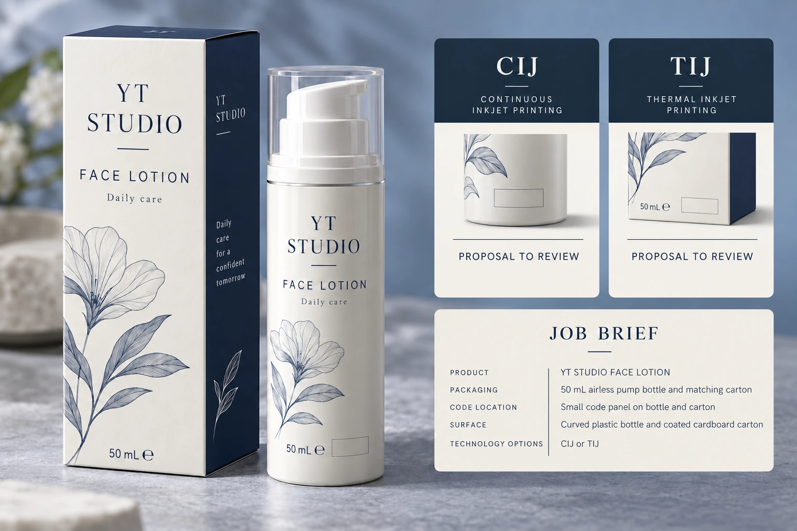
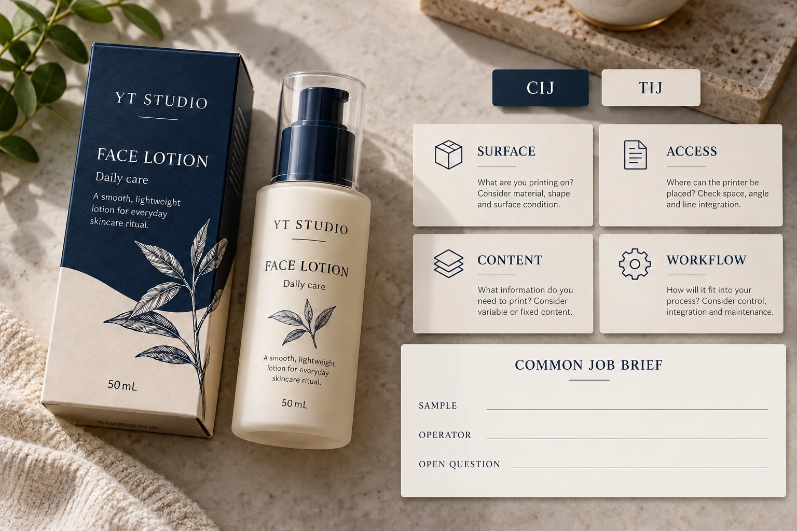

Choose between continuous inkjet and thermal inkjet using the actual coding job: the finished surface, available head access, approved content and operating workflow. A technology name or a sharp sample image does not establish which proposal fits the pack that must run.
For a packaging engineer buying printed labels for an OEM line, the immediate decision may be narrower than buying a coder. The label construction and coding area must be compatible with the receiving site's agreed system. Get that operator's requirement before freezing artwork or finish.

Keep thermal inkjet distinct from thermal transfer
Videojet's FAQ describes CIJ as a noncontact route with ink circulating through the system. Its thermal inkjet ink overview identifies cartridge-based TIJ supplies for specified applications. These are technology and product descriptions, not proof that one ink or coder suits every cosmetic label.
Thermal inkjet is not the same purchase as thermal-transfer ribbon printing or direct-thermal label stock. Keep those proposals separately named in the brief. The thermal-transfer ribbon guide and direct-thermal choice guide address those other routes.
Ask suppliers to identify the actual equipment and ink proposal behind either CIJ or TIJ. A family-level comparison can organize the discussion, but release needs a named configuration and relevant evidence. Do not apply one vendor's distance, speed or material claims as a universal rule for the technology.
Describe the finished surface and coding stage
Identify whether the code lands on exposed face material, a printed panel, varnish, laminate or another surface. Supply the exact construction reference and mark any uncoated window. The container's plastic or glass identity alone may not describe what the ink contacts.
State whether coding occurs on a flat web, a labeled empty pack or a filled assembled container. Ask the operator which geometry and movement the proposal must accommodate. Include the available coding area and head-access constraints as operator-confirmed inputs, not dimensions guessed from a marketing photograph.
The batch-code panel guide covers the general artwork and operation handoff. Here the narrower task is comparing two inkjet proposals against that same identified job. Changing the coding route can require the panel brief to return for review.
Compare content and workflow alongside appearance
Supply approved representative content and identify who controls it. Human-readable text and a machine-readable symbol can require different acceptance evidence. A visually tidy string does not approve the data or establish machine readability on the receiving system.
Ask the operating party to describe job changes, consumable control and the relevant start, stop and cleaning workflow for each proposed configuration. Keep the answers equipment-specific. This article provides no servicing instructions and makes no claim that a cartridge removes every maintenance obligation or that a circulating system always has lower cost.
If cost is compared, use actual proposed consumables and operating assumptions. Do not turn a catalog print-count example into a cost per usable code for another message length, surface or duty. Identify what the quotation includes and what remains an estimate.
Use one job brief for both proposals
The following editorial comparison sheet makes unlike assumptions visible. It is not an equipment specification or acceptance standard.
| Requirement | Input shared with both parties | Evidence to request |
|---|---|---|
| Surface | Complete finished construction and sample | Relevant ink-to-surface result |
| Access | Coding stage, geometry and operator-confirmed space | Supported head arrangement for that job |
| Content | Approved fields, size and symbol requirements | Identifiable sample and relevant reading review |
| Operation | Actual workflow and changeover needs | Equipment-specific operating proposal |
| Handling | Subsequent contact and use conditions | Agreed evidence for the intended code use |
| Supply and cost | Named ink/configuration and quote assumptions | Comparable scope, exclusions and remaining estimates |
Complete the common inputs first. Ask each competent coding party for its supported arrangement and required sample. Compare relevant results against the same content and surface, then obtain the receiving operator's acknowledgement. If the two samples represent different finishes or code tasks, document that difference before choosing a winner.
Stop release when the selected ink is unidentified, the construction differs from the reviewed sample or the required reading task remains open. A promising demonstration can justify further work without authorizing the full production quantity.

An existing line and a new line need different decisions
A hypothetical OEM with an established coder may only need to qualify the proposed label construction and panel. Buying a different technology because it looks newer would expand the decision without necessarily solving the actual uncertainty.
A new operation comparing supported coder proposals has a broader reason to evaluate workflow, integration and sample scope. The team should compare those proposals before requiring the label supplier to accommodate an unselected system. Keep system selection and label release connected, with clear owners for each.
Either project can retain more than one conditional option during research. The eventual release should identify the accepted route, construction and evidence. Do not leave CIJ or TIJ as an interchangeable slash entry on a purchase order if the downstream job depends on the difference.
For a cosmetic label inquiry, provide the bottle, dimensions, quantity per artwork, finished construction and intended coding system. Include representative approved content and the operator's unresolved surface or access question. The form prepares a message; send specifications by email or WhatsApp. Ask what label and sample proposal can support the actual coding job.